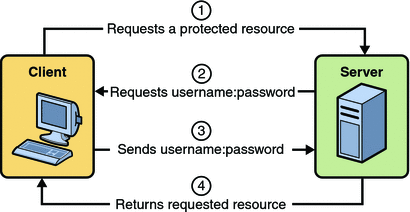
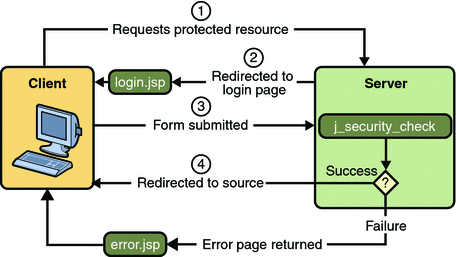
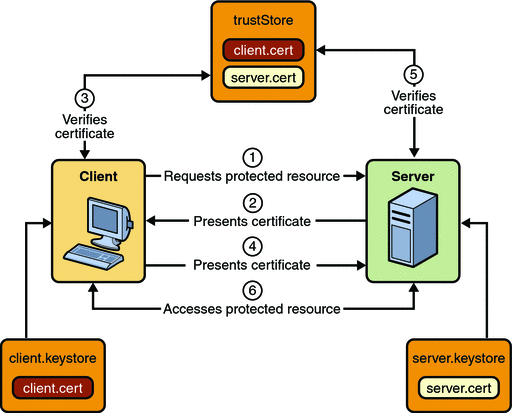
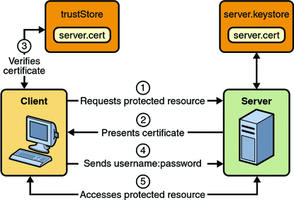

Defining Security Requirements for Web Applications
Web applications are created by application developers who give, sell, or otherwise transfer the application to an application deployer for installation into a runtime environment. Application developers communicate how the security is to be set up for the deployed application declaratively by use of the deployment descriptor mechanism or programmatically by use of annotations. When this information is passed on to the deployer, the deployer uses this information to define method permissions for security roles, set up user authentication, and whether or not to use HTTPS for transport. If you don’t define security requirements, the deployer will have to determine the security requirements independently.
If you specify a value in an annotation, and then explicitly specify the same value in the deployment descriptor, the value in the deployment descriptor overrides any values specified in annotations. If a value for a servlet has not been specified in the deployment descriptor, and a value has been specified for that servlet by means of the use of annotations, the value specified in annotations will apply. The granularity of overriding is on the per-servlet basis.
The web application deployment descriptor may contain an attribute of metadata-complete on the web-app element. The metadata-complete attribute defines whether the web application deployment descriptor is complete, or whether the class files of the JAR file should be examined for annotations that specify deployment information. When the metadata-complete attribute is not specified, or is set to false, the deployment descriptors examine the class files of applications for annotations that specify deployment information. When the metadata-complete attribute is set to true, the deployment descriptor ignores any servlet annotations present in the class files of the application. Thus, deployers can use deployment descriptors to customize or override the values specified in annotations.
Many elements for security in a web application deployment descriptor cannot, as yet, be specified as annotations, therefore, for securing web applications, deployment descriptors are a necessity. However, where possible, annotations are the recommended method for securing web components.
The following sections discuss the use of annotations and deployment descriptor elements to secure web applications:
Declaring Security Requirements Using Annotations
The Java Metadata Specification (JSR-175), which is part of J2SE 5.0 and greater, provides a means of specifying configuration data in Java code. Metadata in Java code is more commonly referred to in this document as annotations. In Java EE, annotations are used to declare dependencies on external resources and configuration data in Java code without the need to define that data in a configuration file. Several common annotations are specific to specifying security in any Java application. These common annotations are specified in JSR-175, A Metadata Facility for the Java Programming Language, and JSR-250, Common Annotations for the Java Platform. Annotations specific to web components are specified in the Java Servlet 2.5 Specification.
In servlets, you can use the annotations discussed in the following sections to secure a web application:
Using the @DeclareRoles Annotation
This annotation is used to define the security roles that comprise the security model of the application. This annotation is specified on a class, and it typically would be used to define roles that could be tested (for example, by calling isUserInRole) from within the methods of the annotated class.
Following is an example of how this annotation would be used. In this example, BusinessAdmin is the only security role specified, but the value of this parameter can include a list of security roles specified by the application.
@DeclareRoles("BusinessAdmin")
public class CalculatorServlet {
//...
}Specifying @DeclareRoles("BusinessAdmin") is equivalent to defining the following in web.xml:
<web-app>
<security-role>
<role-name>BusinessAdmin</role-name>
</security-role>
</web-app>The syntax for declaring more than one role is as shown in the following example:
@DeclareRoles({"Administrator", "Manager", "Employee"})This annotation is not used to link application roles to other roles. When such linking is necessary, it is accomplished by defining an appropriate security-role-ref in the associated deployment descriptor, as described in Declaring and Linking Role References.
When a call is made to isUserInRole from the annotated class, the caller identity associated with the invocation of the class is tested for membership in the role with the same name as the argument to isUserInRole. If a security-role-ref has been defined for the argument role-name, the caller is tested for membership in the role mapped to the role-name.
For further details on the @DeclareRoles annotation, refer to JSR–250, Common Annotations for the Java Platform, and Using Enterprise Bean Security Annotations in this tutorial.
Using the @RunAs Annotation
The @RunAs annotation defines the role of the application during execution in a Java EE container. It can be specified on a class, allowing developers to execute an application under a particular role. The role must map to the user/group information in the container’s security realm. The value element in the annotation is the name of a security role of the application during execution in a Java EE container. The use of the @RunAs annotation is discussed in more detail in Propagating Security Identity.
The following is an example that uses the @RunAs annotation:
@RunAs("Admin")
public class CalculatorServlet {
@EJB private ShoppingCart myCart;
public void doGet(HttpServletRequest, req, HttpServletResponse res) {
//....
myCart.getTotal();
//....
}
}
//....
}The @RunAs annotation is equivalent to the run-as element in the deployment descriptor.
Declaring Security Requirements in a Deployment Descriptor
Web applications are created by application developers who give, sell, or otherwise transfer the application to an application deployer for installation into a runtime environment. Application developers communicate how the security is to be set up for the deployed application declaratively by use of the deployment descriptor mechanism. A deployment descriptor enables an application’s security structure, including roles, access control, and authentication requirements, to be expressed in a form external to the application.
A web application is defined using a standard Java EE web.xml deployment descriptor. A deployment descriptor is an XML schema document that conveys elements and configuration information for web applications. The deployment descriptor must indicate which version of the web application schema (2.4 or 2.5) it is using, and the elements specified within the deployment descriptor must comply with the rules for processing that version of the deployment descriptor. Version 2.5 of the Java Servlet Specification, which can be downloaded at SRV.13, Deployment Descriptor, contains more information regarding the structure of deployment descriptors.
The following code is an example of the elements in a deployment descriptor that apply specifically to declaring security for web applications or for resources within web applications. This example comes from section SRV.13.5.2, An Example of Security, from the Java Servlet Specification 2.5.
<?xml version="1.0" encoding="ISO-8859-1"?>
<web-app xmlns="http://java.sun.com/xml/ns/j2ee"
xmlns:xsi="http://www.w3.org/2001/XMLSchema-instance"
xsi:schemaLocation="http://java.sun.com/xml/ns/j2ee
http://java.sun.com/xml/ns/j2ee/web-app_2_5.xsd"
version="2.5">
<display-name>A Secure Application</display-name>
<!-- SERVLET -->
<servlet>
<servlet-name>catalog</servlet-name>
<servlet-class>com.mycorp.CatalogServlet</servlet-class>
<init-param>
<param-name>catalog</param-name>
<param-value>Spring</param-value>
</init-param>
<security-role-ref>
<role-name>MGR</role-name>
<!-- role name used in code -->
<role-link>manager</role-link>
</security-role-ref>
</servlet>
<!-- SECURITY ROLE -->
<security-role>
<role-name>manager</role-name>
</security-role>
<servlet-mapping>
<servlet-name>catalog</servlet-name>
<url-pattern>/catalog/*</url-pattern>
</servlet-mapping>
<!-- SECURITY CONSTRAINT -->
<security-constraint>
<web-resource-collection>
<web-resource-name>CartInfo</web-resource-name>
<url-pattern>/catalog/cart/*</url-pattern>
<http-method>GET</http-method>
<http-method>POST</http-method>
</web-resource-collection>
<auth-constraint>
<role-name>manager</role-name>
</auth-constraint>
<user-data-constraint>
<transport-guarantee>CONFIDENTIAL</transport-guarantee>
</user-data-constraint>
</security-constraint>
<!-- LOGIN CONFIGURATION-->
<login-config>
<auth-method>BASIC</auth-method>
</login-config>
</web-app>As shown in the preceding example, the <web-app> element is the root element for web applications. The <web-app> element contains the following elements that are used for specifying security for a web application:
<security-role-ref>
The security role reference element contains the declaration of a security role reference in the web application’s code. The declaration consists of an optional description, the security role name used in the code, and an optional link to a security role.
The security role name specified here is the security role name used in the code. The value of the role-name element must be the String used as the parameter to the HttpServletRequest.isUserInRole(String role) method. The container uses the mapping of security-role-ref to security-role when determining the return value of the call.
The security role link specified here contains the value of the name of the security role that the user may be mapped into. The role-link element is used to link a security role reference to a defined security role. The role-link element must contain the name of one of the security roles defined in the security-role elements.
For more information about security roles, read Working with Security Roles.
<security-role>
A security role is an abstract name for the permission to access a particular set of resources in an application. A security role can be compared to a key that can open a lock. Many people might have a copy of the key. The lock doesn’t care who you are, only that you have the right key.
The security-role element is used with the security-role-ref element to map roles defined in code to roles defined for the web application. For more information about security roles, read Working with Security Roles.
<security-constraint>
A security constraint is used to define the access privileges to a collection of resources using their URL mapping. Read Specifying Security Constraints for more detail on this element. The following elements can be part of a security constraint:
<web-resource-collection> element: Web resource collections describe a URL pattern and HTTP method pair that identify resources that need to be protected.
<auth-constraint> element: Authorization constraints indicate which users in specified roles are permitted access to this resource collection. The role name specified here must either correspond to the role name of one of the <security-role> elements defined for this web application, or be the specially reserved role name *, which is a compact syntax for indicating all roles in the web application. Role names are case sensitive. The roles defined for the application must be mapped to users and groups defined on the server. For more information about security roles, read Working with Security Roles.
<user-data-constraint> element: User data constraints specify network security requirements, in particular, this constraint specifies how data communicated between the client and the container should be protected. If a user transport guarantee of INTEGRAL or CONFIDENTIAL is declared, all user name and password information will be sent over a secure connection using HTTP over SSL (HTTPS). Network security requirements are discussed in Specifying a Secure Connection.
<login-config>
The login configuration element is used to specify the user authentication method to be used for access to web content, the realm in which the user will be authenticated, and, in the case of form-based login, additional attributes. When specified, the user must be authenticated before access to any resource that is constrained by a security constraint will be granted. The types of user authentication methods that are supported include basic, form-based, digest, and client certificate. Read Specifying an Authentication Mechanism for more detail on this element.
Some of the elements of web application security must be addressed in server configuration files rather than in the deployment descriptor for the web application. Configuring security on the Application Server is discussed in the following sections and books:
The following sections provide more information on deployment descriptor security elements:
Specifying Security Constraints
Security constraints are a declarative way to define the protection of web content. A security constraint is used to define access privileges to a collection of resources using their URL mapping. Security constraints are defined in a deployment descriptor. The following example shows a typical security constraint, including all of the elements of which it consists:
<security-constraint>
<display-name>ExampleSecurityConstraint</display-name>
<web-resource-collection>
<web-resource-name>
ExampleWRCollection
</web-resource-name>
<url-pattern>/example</url-pattern>
<http-method>POST</http-method>
<http-method>GET</http-method>
</web-resource-collection>
<auth-constraint>
<role-name>exampleRole</role-name>
</auth-constraint>
<user-data-constraint>
<transport-guarantee>CONFIDENTIAL</transport-guarantee>
</user-data-constraint>
</security-constraint>As shown in the example, a security constraint (<security-constraint> in deployment descriptor) consists of the following elements:
Web resource collection (web-resource-collection)
A web resource collection is a list of URL patterns (the part of a URL after the host name and port which you want to constrain) and HTTP operations (the methods within the files that match the URL pattern which you want to constrain (for example, POST, GET)) that describe a set of resources to be protected.
Authorization constraint (auth-constraint)
An authorization constraint establishes a requirement for authentication and names the roles authorized to access the URL patterns and HTTP methods declared by this security constraint. If there is no authorization constraint, the container must accept the request without requiring user authentication. If there is an authorization constraint, but no roles are specified within it, the container will not allow access to constrained requests under any circumstances. The wildcard character * can be used to specify all role names defined in the deployment descriptor. Security roles are discussed in Working with Security Roles.
User data constraint (user-data-constraint)
A user data constraint establishes a requirement that the constrained requests be received over a protected transport layer connection. This guarantees how the data will be transported between client and server. The choices for type of transport guarantee include NONE, INTEGRAL, and CONFIDENTIAL. If no user data constraint applies to a request, the container must accept the request when received over any connection, including an unprotected one. These options are discussed in Specifying a Secure Connection.
Security constraints work only on the original request URI and not on calls made throug a RequestDispatcher (which include <jsp:include> and <jsp:forward>). Inside the application, it is assumed that the application itself has complete access to all resources and would not forward a user request unless it had decided that the requesting user also had access.
Many applications feature unprotected web content, which any caller can access without authentication. In the web tier, you provide unrestricted access simply by not configuring a security constraint for that particular request URI. It is common to have some unprotected resources and some protected resources. In this case, you will define security constraints and a login method, but they will not be used to control access to the unprotected resources. Users won’t be asked to log in until the first time they enter a protected request URI.
The Java Servlet specification defines the request URI as the part of a URL after the host name and port. For example, let’s say you have an e-commerce site with a browsable catalog that you would want anyone to be able to access, and a shopping cart area for customers only. You could set up the paths for your web application so that the pattern /cart/* is protected but nothing else is protected. Assuming that the application is installed at context path /myapp, the following are true:
http://localhost:8080/myapp/index.jsp is not protected.
http://localhost:8080/myapp/cart/index.jsp is protected.
A user will not be prompted to log in until the first time that user accesses a resource in the cart/ subdirectory.
Specifying Separate Security Constraints for Different Resources
You can create a separate security constraint for different resources within your application. For example, you could allow users with the role of PARTNER access to the POST method of all resources with the URL pattern /acme/wholesale/*, and allow users with the role of CLIENT access to the POST method of all resources with the URL pattern /acme/retail/*. An example of a deployment descriptor that would demonstrate this functionality is the following:
// SECURITY CONSTRAINT #1
<security-constraint>
<web-resource-collection>
<web-resource-name>wholesale</web-resource-name>
<url-pattern>/acme/wholesale/*</url-pattern>
<http-method>GET</http-method>
<http-method>POST</http-method>
</web-resource-collection>
<auth-constraint>
<role-name>PARTNER</role-name>
</auth-constraint>
<user-data-constraint>
<transport-guarantee>CONFIDENTIAL</transport-guarantee>
</user-data-constraint>
</security-constraint>
// SECURITY CONSTRAINT #2
<security-constraint>
<web-resource-collection>
<web-resource-name>retail</web-resource-name>
<url-pattern>/acme/retail/*</url-pattern>
<http-method>GET</http-method>
<http-method>POST</http-method>
</web-resource-collection>
<auth-constraint>
<role-name>CLIENT</role-name>
</auth-constraint>
</security-constraint>When the same url-pattern and http-method occur in multiple security constraints, the constraints on the pattern and method are defined by combining the individual constraints, which could result in unintentional denial of access. Section 12.7.2 of the Java Servlet 2.5 Specification (downloadable from http://jcp.org/en/jsr/detail?id=154) gives an example that illustrates the combination of constraints and how the declarations will be interpreted.
Specifying a Secure Connection
A user data constraint (<user-data-constraint> in the deployment descriptor) requires that all constrained URL patterns and HTTP methods specified in the security constraint are received over a protected transport layer connection such as HTTPS (HTTP over SSL). A user data constraint specifies a transport guarantee (<transport-guarantee> in the deployment descriptor). The choices for transport guarantee include CONFIDENTIAL, INTEGRAL, or NONE. If you specify CONFIDENTIAL or INTEGRAL as a security constraint, that type of security constraint applies to all requests that match the URL patterns in the web resource collection and not just to the login dialog box. The following security constraint includes a transport guarantee:
<security-constraint>
<web-resource-collection>
<web-resource-name>wholesale</web-resource-name>
<url-pattern>/acme/wholesale/*</url-pattern>
<http-method>GET</http-method>
<http-method>POST</http-method>
</web-resource-collection>
<auth-constraint>
<role-name>PARTNER</role-name>
</auth-constraint>
<user-data-constraint> <transport-guarantee>CONFIDENTIAL</transport-guarantee> </user-data-constraint>
</security-constraint>The strength of the required protection is defined by the value of the transport guarantee. Specify CONFIDENTIAL when the application requires that data be transmitted so as to prevent other entities from observing the contents of the transmission. Specify INTEGRAL when the application requires that the data be sent between client and server in such a way that it cannot be changed in transit. Specify NONE to indicate that the container must accept the constrained requests on any connection, including an unprotected one.
The user data constraint is handy to use in conjunction with basic and form-based user authentication. When the login authentication method is set to BASIC or FORM, passwords are not protected, meaning that passwords sent between a client and a server on an unprotected session can be viewed and intercepted by third parties. Using a user data constraint with the user authentication mechanism can alleviate this concern. Configuring a user authentication mechanism is described in Specifying an Authentication Mechanism.
To guarantee that data is transported over a secure connection, ensure that SSL support is configured for your server. If your server is the Sun Java System Application Server, SSL support is already configured. If you are using another server, consult the documentation for that server for information on setting up SSL support. More information on configuring SSL support on the Application Server can be found in Establishing a Secure Connection Using SSL and in the Sun Java System Application Server 9.1 Administration Guide.
Note - Good Security Practice: If you are using sessions, after you switch to SSL you should never accept any further requests for that session that are non-SSL. For example, a shopping site might not use SSL until the checkout page, and then it might switch to using SSL to accept your card number. After switching to SSL, you should stop listening to non-SSL requests for this session. The reason for this practice is that the session ID itself was not encrypted on the earlier communications. This is not so bad when you’re only doing your shopping, but after the credit card information is stored in the session, you don’t want a bad guy trying to fake the purchase transaction against your credit card. This practice could be easily implemented using a filter.
Specifying an Authentication Mechanism
To specify an authentication mechanism for your web application, declare a login-config element in the application deployment descriptor. The login-config element is used to configure the authentication method and realm name that should be used for this application, and the attributes that are needed by the form login mechanism when form-based login is selected. The sub-element auth-method configures the authentication mechanism for the web application. The element content must be either BASIC, DIGEST, FORM, CLIENT-CERT, or a vendor-specific authentication scheme. The realm-name element indicates the realm name to use for the authentication scheme chosen for the web application. The form-login-config element specifies the login and error pages that should be used when FORM based login is specified.
The authentication mechanism you choose specifies how the user is prompted to login. If the <login-config> element is present, and the <auth-method> element contains a value other than NONE, the user must be authenticated before it can access any resource that is constrained by the use of a security-constraint element in the same deployment descriptor (read Specifying Security Constraints for more information on security constraints). If you do not specify an authentication mechanism, the user will not be authenticated.
When you try to access a web resource that is constrained by a security-constraint element, the web container activates the authentication mechanism that has been configured for that resource. To specify an authentication method, place the <auth-method> element between <login-config> elements in the deployment descriptor, like this:
<login-config>
<auth-method>BASIC</auth-method>
</login-config>An example of a deployment descriptor that constrains all web resources for this application (in italics below) and requires HTTP basic authentication when you try to access that resource (in bold below) is shown here:
<?xml version="1.0" encoding="UTF-8"?>
<web-app version="2.5"
xmlns="http://java.sun.com/xml/ns/javaee"
xmlns:xsi="http://www.w3.org/2001/XMLSchema-instance"
xsi:schemaLocation="http://java.sun.com/xml/ns/j2ee
http://java.sun.com/xml/ns/javaee/web-app_2_5.xsd">
<display-name>basicauth</display-name>
<servlet>
<display-name>index</display-name>
<servlet-name>index</servlet-name>
<jsp-file>/index.jsp</jsp-file>
</servlet>
<security-role>
<role-name>loginUser</role-name>
</security-role>
<security-constraint> <display-name>SecurityConstraint1</display-name> <web-resource-collection> <web-resource-name>WRCollection</web-resource-name> <url-pattern>/*</url-pattern> </web-resource-collection> <auth-constraint> <role-name>loginUser</role-name> </auth-constraint> </security-constraint>
<login-config> <auth-method>BASIC</auth-method> </login-config>
</web-app>Before you can authenticate a user, you must have a database of user names, passwords, and roles configured on your web or application server. For information on setting up the user database, refer to Managing Users and Groups on the Application Server and the Sun Java System Application Server 9.1 Administration Guide.
The authentication mechanisms are discussed further in the following sections:
HTTP Basic Authentication
HTTP Basic Authentication requires that the server request a user name and password from the web client and verify that the user name and password are valid by comparing them against a database of authorized users. When basic authentication is declared, the following actions occur:
A client requests access to a protected resource.
The web server returns a dialog box that requests the user name and password.
The client submits the user name and password to the server.
The server authenticates the user in the specified realm and, if successful, returns the requested resource.
Figure 30-2 shows what happens when you specify HTTP basic authentication.
Figure 30-2 HTTP Basic Authentication
The following example shows how to specify basic authentication in your deployment descriptor:
<login-config>
<auth-method>BASIC</auth-method>
</login-config>HTTP basic authentication is not a secure authentication mechanism. Basic authentication sends user names and passwords over the Internet as text that is Base64 encoded, and the target server is not authenticated. This form of authentication can expose user names and passwords. If someone can intercept the transmission, the user name and password information can easily be decoded. However, when a secure transport mechanism, such as SSL, or security at the network level, such as the IPSEC protocol or VPN strategies, is used in conjunction with basic authentication, some of these concerns can be alleviated.
Example: Basic Authentication with JAX-WS is an example application that uses HTTP basic authentication in a JAX-WS service. Example: Using Form-Based Authentication with a JSP Page can be easily modified to demonstrate basic authentication. To do so, replace the text between the <login-config> elements with those shown in this section.
Form-Based Authentication
Form-based authentication allows the developer to control the look and feel of the login authentication screens by customizing the login screen and error pages that an HTTP browser presents to the end user. When form-based authentication is declared, the following actions occur:
A client requests access to a protected resource.
If the client is unauthenticated, the server redirects the client to a login page.
The client submits the login form to the server.
The server attempts to authenticate the user.
If authentication succeeds, the authenticated user’s principal is checked to ensure it is in a role that is authorized to access the resource. If the user is authorized, the server redirects the client to the resource using the stored URL path.
If authentication fails, the client is forwarded or redirected to an error page.
Figure 30-3 shows what happens when you specify form-based authentication.
Figure 30-3 Form-Based Authentication
The following example shows how to declare form-based authentication in your deployment descriptor:
<login-config>
<auth-method>FORM</auth-method>
<realm-name>file</realm-name>
<form-login-config>
<form-login-page>/logon.jsp</form-login-page>
<form-error-page>/logonError.jsp</form-error-page>
</form-login-config>
</login-config>The login and error page locations are specified relative to the location of the deployment descriptor. Examples of login and error pages are shown in Creating the Login Form and the Error Page.
Form-based authentication is not particularly secure. In form-based authentication, the content of the user dialog box is sent as plain text, and the target server is not authenticated. This form of authentication can expose your user names and passwords unless all connections are over SSL. If someone can intercept the transmission, the user name and password information can easily be decoded. However, when a secure transport mechanism, such as SSL, or security at the network level, such as the IPSEC protocol or VPN strategies, is used in conjunction with form-based authentication, some of these concerns can be alleviated.
The section Example: Using Form-Based Authentication with a JSP Page is an example application that uses form-based authentication.
Using Login Forms
When creating a form-based login, be sure to maintain sessions using cookies or SSL session information.
As shown in Form-Based Authentication, for authentication to proceed appropriately, the action of the login form must always be j_security_check. This restriction is made so that the login form will work no matter which resource it is for, and to avoid requiring the server to specify the action field of the outbound form. The following code snippet shows how the form should be coded into the HTML page:
<form method="POST" action="j_security_check"> <input type="text" name="j_username"> <input type="password" name="j_password"> </form>
HTTPS Client Authentication
HTTPS Client Authentication requires the client to possess a Public Key Certificate (PKC). If you specify client authentication, the web server will authenticate the client using the client’s public key certificate.
HTTPS Client Authentication is a more secure method of authentication than either basic or form-based authentication. It uses HTTP over SSL (HTTPS), in which the server authenticates the client using the client’s Public Key Certificate (PKC). Secure Sockets Layer (SSL) technology provides data encryption, server authentication, message integrity, and optional client authentication for a TCP/IP connection. You can think of a public key certificate as the digital equivalent of a passport. It is issued by a trusted organization, which is called a certificate authority (CA), and provides identification for the bearer.
Before using HTTP Client Authentication, you must make sure that the following actions have been completed:
Make sure that SSL support is configured for your server. If your server is the Sun Java System Application Server 9.1, SSL support is already configured. If you are using another server, consult the documentation for that server for information on setting up SSL support. More information on configuring SSL support on the application server can be found in Establishing a Secure Connection Using SSL and the Sun Java System Application Server 9.1 Administration Guide.
Make sure the client has a valid Public Key Certificate. For more information on creating and using public key certificates, read Working with Digital Certificates.
The following example shows how to declare HTTPS client authentication in your deployment descriptor:
<login-config>
<auth-method>CLIENT-CERT</auth-method>
</login-config>
Mutual Authentication
With mutual authentication, the server and the client authenticate one another. There are two types of mutual authentication:
Certificate-based mutual authentication (see Figure 30-4)
User name- and password-based mutual authentication (see Figure 30-5)
When using certificate-based mutual authentication, the following actions occur:
A client requests access to a protected resource.
The web server presents its certificate to the client.
The client verifies the server’s certificate.
If successful, the client sends its certificate to the server.
The server verifies the client’s credentials.
If successful, the server grants access to the protected resource requested by the client.
Figure 30-4 shows what occurs during certificate-based mutual authentication.
Figure 30-4 Certificate-Based Mutual Authentication
In user name- and password-based mutual authentication, the following actions occur:
A client requests access to a protected resource.
The web server presents its certificate to the client.
The client verifies the server’s certificate.
If successful, the client sends its user name and password to the server, which verifies the client’s credentials.
If the verification is successful, the server grants access to the protected resource requested by the client.
Figure 30-5 shows what occurs during user name- and password-based mutual authentication.
Figure 30-5 User Name- and Password-Based Mutual Authentication
Digest Authentication
Like HTTP basic authentication, HTTP Digest Authentication authenticates a user based on a user name and a password. However, the authentication is performed by transmitting the password in an encrypted form which is much more secure than the simple Base64 encoding used by basic authentication. Digest authentication is not currently in widespread use, and is not implemented in the Application Server, therefore, there is no further discussion of it in this document.